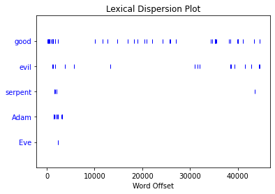

NLTK: nltk.book
NLTK: nltk.book#
# importing the NLTK library so we can do text analysis
import nltk
# importing a dataset of "books" to get started with text analysis
from nltk.book import *
*** Introductory Examples for the NLTK Book ***
Loading text1, ..., text9 and sent1, ..., sent9
Type the name of the text or sentence to view it.
Type: 'texts()' or 'sents()' to list the materials.
text1: Moby Dick by Herman Melville 1851
text2: Sense and Sensibility by Jane Austen 1811
text3: The Book of Genesis
text4: Inaugural Address Corpus
text5: Chat Corpus
text6: Monty Python and the Holy Grail
text7: Wall Street Journal
text8: Personals Corpus
text9: The Man Who Was Thursday by G . K . Chesterton 1908
# using the method "concordance" to get a view of the contexts surrounding a given word
text5.concordance("man")
Displaying 25 of 39 matches:
i have to go to the docs tomorrow ya man I am too .. Connected to ... Slip awa
U121 . JOIN rethinks ??? lmaoooo Aw , man . whats up U155 i was only kidding .
er yes PART that red color bit my eye man ... . ACTION video tapes . hey U20 Im
that one lol PART I am not a bisexual man , but I am seeking some ( equal oppor
y hater LOL Hi , U3 , do u ever sleep man am I out in left field tonight ... so
work Hi U30 I see PART hi U19 bored ? man the day is slipping away do something
ature ouch U34 lol there a story of a man name brady who had 12 kids out of wed
t http://www.shadowbots.com OOH DAamn man i 'm , such a sucka :) whats not to l
rts ? LoL moped U28 ?.. ohh ur a real man i had a moped once yup hehe U16 :) th
PART from azerbaijan dang thats cold man i syck who wanna chatr (((((((( neone
ere attracted to the same sex JOIN oh man , they just xxxed it muh nose is cold
!! hi U33 hugs JOIN U33 hiiii U26 U26 man , where has the U26 man gone ? hi U35
hiiii U26 U26 man , where has the U26 man gone ? hi U35 hi U16 , hi U14 howdy U
im , lol hey U19 lol i think of macho man i think of the village people lol (((
to ((( U21 )))) but can you tell if a man is good looking or not U16 ? . ACTION
aint no such a thang as a good lookin man lol hi U27 JOIN lmao well .... cepn f
t the end he knew was romantic with a man say no lol U34 lol go Cardinals !! ya
nks U50 you need naked ? hiya U53 :-) man U37 , one hour ago I said Hello to yo
specalily love the music JOIN ...... man my spelling sucks today PART mine too
're so hot U66 . U119 . JOIN JOIN oh man wish i was you . then i wouldnt have
e ur gay . PART PART . ACTION = U58 . Man shouldnt have walked away from the co
-...)...- S.M.R. <3 . JOIN JOIN PART Man im bored . My short attention span ha
minutes / seconds . it 's my Music . Man i hate pop up adds . they keep blocki
hower any ladies want chat / single / man / 35 / New York can pm me JOIN brb JO
it though the girls here are on heat man im a virgin I am laughing so hard elb
# checking the concordance for 'woman'
text5.concordance("woman")
Displaying 6 of 6 matches:
etshybbw ?? lol U47 stand yer ground woman !!! i just saw shaun of the dead ..
was horrible lol U28 .. control your woman ! JOIN u dont want to live at all ju
n is ready U132 : Are you a man or a woman ? that depends if neysa 's cooking i
!!!! aloha morning ciao hello eskimo woman whatever else it is to you people lo
get a pro U7 , why bother and a real woman never asks been there plenaty of tim
Z THAT IT JUST SHOWS YOUR NOT MAN OR WOMAN ENOUGH . Hey any guy want to talk ab
# using the 'similar' method to check for words that have common contexts
text5.similar("man")
girl gay part hey ah nick do ok yes male no how oh k jerk was sex yea
leave life
text5.similar("woman")
ugly teacher tongue mistake virgin
# the word 'ugly' has a common context with the word 'woman'
text5.concordance('ugly')
Displaying 4 of 4 matches:
what PART i hate you U121 fuck your ugly JOIN if i had a daughter she would r
profile ) Lmfao dr phil said so I am ugly ? PART wouldnt let her date Is n't i
e Hott or something mean I 'm really ugly JOIN : U15 ! U15 @ U15 MODE #14-19te
s for some trout . PART yeah someone ugly enough for your fluids hahaha ask U9
# using the 'dispersion_plot' method to see where words
# appear across the text
text3.dispersion_plot(['good', 'evil', 'serpent', 'Adam', 'Eve'])
